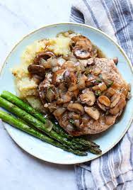

Mushroom Pork Chops

Description
One of out more popular dishes on our website.
This one has it all. Savory, sweet, umammi, and even a little mystery.
Do yourself a favor and try this dish today. Let us know how it goes!
Ingredients
- 4 pork chops
- salt and ground pepper to taste
- 1 pinch garlic salt, or to taste
- 1 onion, chopped
- 1 can condensed cream of mushroom soup
- Season pork chops with salt, pepper, and garlic salt.
- Brown chops over medium-high heat in a large nonstick skillet. Add mushrooms and onions and sauté for one minute
- Pour soup over chops. Cover, reduce the heat to medium low, and simmer until chops are cooked through, 20 to 30 minutes.